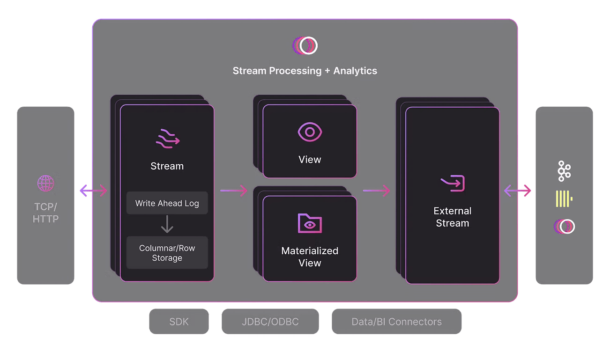
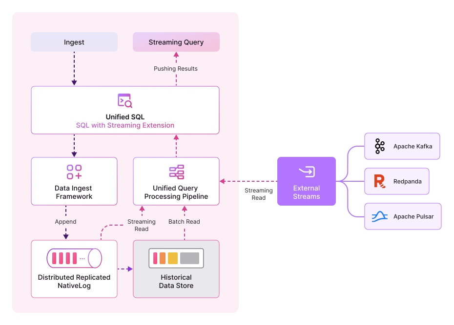

请访问原文链接：Timeplus Enterprise 3.1 (Linux, macOS) - 流处理平台 查看最新版。原创作品，转载请保留出处。
抄袭是最廉价的捷径，撑不起门面，也遮不住灵魂的不堪。本站的沉默不是默许，是给你留的最后一点体面。
作者主页：sysin.org
Timeplus Enterprise
流分析变革
欺诈与风险监控
流式处理 ETL
可观测性
交易监察
边缘处理
预测性维护
网络安全

Timeplus 是唯一一个在单二进制引擎中具有列式和行存储的 SQL 流处理和分析引擎。在边缘或云中构建实时应用程序。
介绍
Timeplus 是一个简单、强大且经济高效的流处理平台。
Timeplus 提供强大的端到端功能，帮助数据团队快速直观地处理流数据和历史数据，可供各种规模和行业的组织使用。它使数据工程师和平台工程师能够使用 SQL 释放流数据价值。
它可以通过不同的方式获得：
Timeplus Proton：核心引擎在 Apache 2.0 许可证下在 GitHub 上开源 (sysin)。它是一个快速且轻量级的流式 SQL 引擎。
Timeplus Enterprise：生产就绪的商业产品，具有 2 个部署选项：
- 云：一个完全托管的统一平台，用于流式处理和历史数据处理。
- 自托管：与 Timeplus Cloud 相同的功能集，能够在从边缘到数据中心的任何地方运行和扩展。根据您的配置需求进行定制。

Timeplus 可以轻松连接到不同的数据源（例如 Apache Kafka、Confluence Cloud、Redpanda、NATS、Web Socket/SSE、CSV 文件上传等），通过 SQL 查询探索流模式，将实时见解和警报发送给其他系统或个人，并创建仪表板和可视化 (sysin)。
为什么选择 Timeplus？
简单
单个轻量级二进制文件中的流处理和分析查询功能
强大
在几毫秒内处理数百万个事件，内存 / CPU 要求低
成本效益
无需使用多个系统进行处理和查询，同时仍可选择稍后集成
与您最喜欢的工具集成
- Kafka
- Confluent
- Redpanda
- WarpWtream
- AutoMQ
- slack
- snowflake
- Airbyte
- PULSAR
- StreamNative
- Sling
- NATS
- Rerraform
- MemVerge
新增功能
Timeplus Enterprise 3.0
🌟 关键亮点
Timeplus 3.0 预览版的主要亮点包括：
📝 零复制 NativeLog
预写日志（
NativeLog，也称 Timeplus Streaming Store）现在支持将云对象存储（如 S3）作为主要后端。
这带来了零复制、多主写入以及极高吞吐量（批处理情况下可达数 GB/s）。
同时消除了跨可用区的复制成本，降低了类似 EBS 的 IOPS/带宽开销，使集群更加弹性且具备成本效益。📦 零复制查询状态检查点
物化视图现在支持将查询状态直接进行检查点写入云对象存储。
与零复制 NativeLog 一样，这显著提升了集群的弹性和成本效率。⏰ 调度任务增强
调度任务现在可以基于资源利用率指标分布到所有节点上，从而实现更均衡、更具弹性的调度。
🚨 告警增强
与调度任务类似，告警也可以在任意节点运行，由资源利用率指标引导，提升弹性和性能。
📈 集群弹性与稳定性
本次版本对整体集群的弹性和稳定性进行了显著增强。
🖥️ Timeplus 控制台
控制台已升级，提供更好的系统指标、状态监控、数据血缘、物化视图和集群详细状态等增强功能，带来更优的运维体验。
🗑️ 弃用
timeplus_webtimeplus_web组件已移除，简化了安装与运维。新的 Web 技术栈更加紧凑、高效、性能更强。🗑️ 弃用
kv_servicetimeplus_appserver中的元数据管理现在依赖 Timeplus Mutable Stream，实现了内部kv_service的替代。
因此，kv_service已在本次版本中弃用并移除。
💻 支持的操作系统
| 部署类型 | 操作系统 |
|---|---|
| Linux 裸机 | x64 或 ARM 芯片：Ubuntu 20.04+、RHEL 8+、Fedora 35+、Amazon Linux 2023 |
| Mac 裸机 | Intel 或 Apple 芯片：macOS 14、macOS 15 |
| Kubernetes | Kubernetes 1.25+，配合 Helm 3.12+ |
📦 发布策略
我们建议在生产环境中使用稳定版发布。
工程构建版本（Engineering builds）可用于测试与评估目的。
下载地址
此产品更新较为频繁，版本不在一一列出。
Timeplus Enterprise 2.8.x
- Timeplus Enterprise 2.8.11 for Linux AMD64 (x86_64)
- Timeplus Enterprise 2.8.11 for Linux ARM64 (aarch64)
- Timeplus Enterprise 2.8.11 for macOS x64 (Intel)
Timeplus Enterprise 2.8.11 for macOS ARM64 (Apple)
- 百度网盘链接：
[EoD]
- 百度网盘链接：
Timeplus Enterprise 3.1.x
- Timeplus Enterprise 3.1.x for Linux AMD64 (x86_64)
- Timeplus Enterprise 3.1.x for Linux ARM64 (aarch64)
- Timeplus Enterprise 3.1.x for macOS x64 (Intel)
Timeplus Enterprise 3.1.x for macOS ARM64 (Apple)
- 百度网盘链接：
[EoD]
- 百度网盘链接：

文章用于推荐和分享优秀的软件产品及其相关技术，所有软件提供免费版或试用版。内容若侵犯了您的版权，请联系作者删除。如果您喜欢这篇文章，或者觉得它对您有所帮助，亦或发现有不当之处；欢迎发表评论，也欢迎分享这个网站，或者赞赏一下，谢谢！提示：捐赠或赞赏属于自愿赠予行为，提交后即表示您对作者的支持与认可。为避免误操作，请在确认前仔细检查金额，支付完成后将无法撤销或退还。
 支付宝赞赏
支付宝赞赏  微信赞赏
微信赞赏赞赏一下
敬请注册！点击 “登录” - “用户注册”（已知不支持 21.cn/189.cn 邮箱）。 请勿使用联合登录（已关闭）。